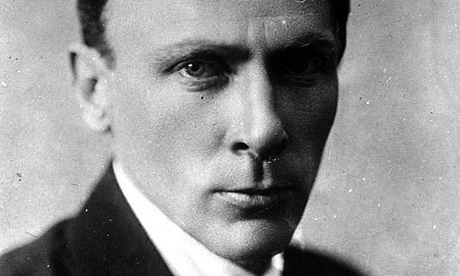
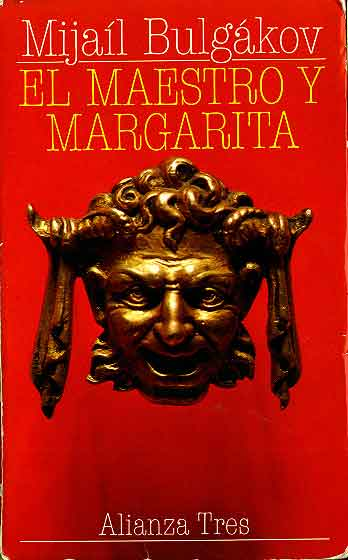
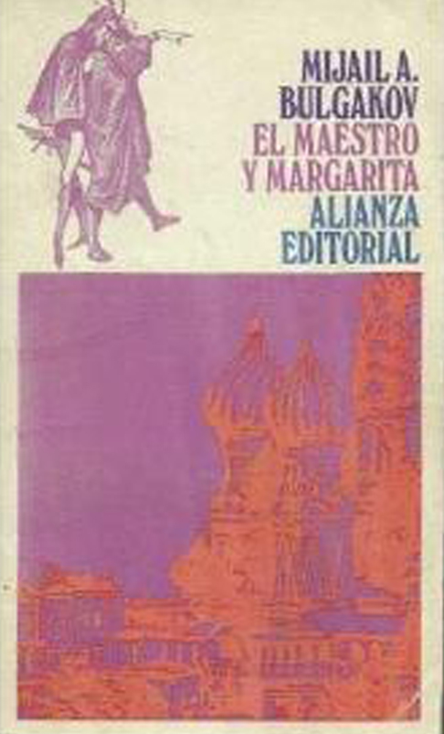

El Maestro y Margarita
El escritor solicitó vestirse de frac y pajarilla, el traje burgués con el que había escandalizado tantas veces el ascético vestir de los soviet. Yelena le sonrió nerviosa, sorprendida de ver a su esposo otra vez dispuesto y desafiante. La prenda, guardada en un baúl, debería estar llena polvo, pero se limitó a responder: “Con unas cuantas sacudidas bastará…”

Bulgákov comienza a trabajar como periodista y rápidamente debuta en el mundo de las letras con varias obras de teatro y narraciones que le valieron, aunque fuera solo por un tiempo, gran reconocimiento. Su novela La Guardia blanca, de 1925, dio lugar a la versión teatral Los días de los Turbín, de 1926, dirigida por el propio Stanislavski, todo un suceso en el Teatro Artístico de Moscú, con cerca de trescientas representaciones, en alguna de cuales se podía ver en primera fila al mismísimo camarada Stalin. Sin embargo, nada de esto lo hizo infalible. Ya para esa fecha había tenido que soportar la requisa de su apartamento y la pérdida de manuscritos incautados por la policía. Debido al tratamiento dado a sus personajes del antiguo Ejército Blanco, se suceden los ataques de la prensa y la Unión de Escritores Proletarios. Bulgakov persevera, se defiende, protesta. Stalin deja de asistir a sus obras, y finalmente acaban por retirar su nombre de editoriales y teatros. Para 1930, ya ha escondido o quemado parte de sus escritos, incluida la primera versión del lo que sería El Maestro y Margarita, titulada La novela del diablo. Desesperado escribe varias cartas dirigidas al gobierno, solicitando primero un puesto de trabajo para subsistir y más tarde, ante la indiferencia del poder, la salida de país. En una de ellas, fechada el 28 de marzo de 1930, se lee: “Apelo al humanismo de las autoridades soviéticas y les pido que actúen de forma magnánima conmigo, un escritor que no puede ser útil a su país, y me concedan la libertad”
Envuelto en su frac de terciopelo roído por los años, con el tazón humeante entre las manos, pidió sentarse junto a la ventana. Como sus ojos ya no volverían a ver otro invierno, quería sentir el suave goteo de la nieve contra los cristales. Llegaba la primavera y las lilas asomaban tímidas en el Jardín. “¿Escribimos hoy, o quieres que te lea?”, preguntó la esposa. Bulgákov meditó varios segundos. Por un lado, venían a su cabeza sus autores amados, Pushkin, Cervantes, Moliere… Y por otro, pensaba en el futuro de la novela en la que trabaja desde hacía años, con la triste certeza de que no la vería publicada. Levantó el tazón y bebió un sorbo: “Léeme a Pushkin…”

No sé sabe aún cómo logró escapar del destierro a Siberia o de la muerte, en tiempos tan difíciles para todo aquel que no tuviera una ideología definida. Lo cierto es que a diferencia de Nina Berberova o Vladímir Nabokov, dos de sus contemporáneos, Mijaíl Bulgákov nunca pudo salir de la URSS. Continuó en silencio su trabajo, acompañado por su última esposa, a quien le dictaba después de quedar definitivamente ciego. En estas condiciones, debió terminar El Maestro y Margarita, la novela que lo lanzara a la fama mundial, editada por su viuda en 1967. La grandeza de esta obra no solo se basa, como puedan pensar algunos, en la irreverente visión del autor ante un régimen totalitario. Su búsqueda artística va mucho más allá, dentro de una literatura marcada por sucesivas variantes del realismo: sicológico, histórico, y por último, socialista. Bulgakov se arriesga, y propone un texto alucinante, mezclando realidad con fantasía, mito e historia, ironía y denuncia, amor y tragedia. La trama nos presenta al diablo suelto en Moscú, para trocar las rectas vidas de sus obedientes habitantes. Un escritor frustrado que intenta escribir una novela sobre Poncio Pilatos, mientras se cruza en su camino a la bella Margarita, amor condenado a lo imposible como su propia vida en el sanatorio donde sería recluido. Cuando se habla de la novedad y la audacia narrativa de esta historia, se mencionan a menudo influencias del Fausto, la sátira desmesurada a lo Rabelais, el ridículo escénico aportado por el Quijote, y se olvida que la fina ironía, esa estupidez provinciana, expuesta como de sobremesa en el ruedo público, sin duda nos recuerda al mejor Dickens. La novela, que releo ahora veinte años después me sigue pareciendo uno de esos libros únicos, incisivos, caos lúcido escrito por un loco en estado de gracia, que escarba en la maltratada alma rusa para sacar su peor rostro.

La esposa, ahogada la voz entre la angustia y el asombro, recitó: “Hay un roble junto a una ensenada; al roble, atado noche y día, con cadena de oro repujada, ronda un gato de gran sabiduría…”, y así prosiguió, poemas tras poemas, sin notar que los párpados del Maestro se iban achicando hasta cerrarse por completo. “A ese romántico le debemos todo”, fueron sus últimas palabras. Era el tres de marzo de 1940. Horas más tarde se anunciaría a discreción la muerte de Mijaíl Bulgákov, uno de los tantos traidores a la madre patria.
|